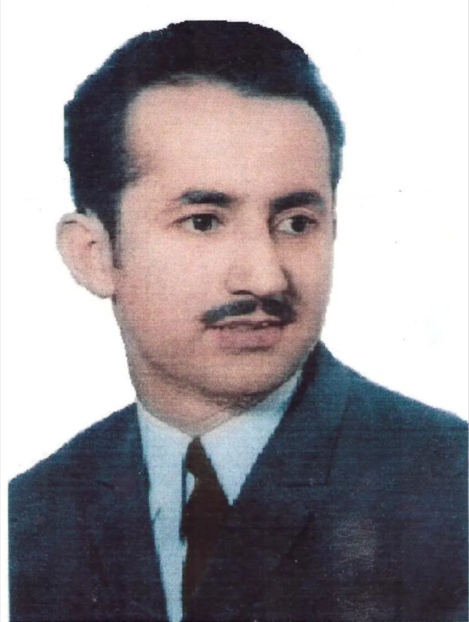

سید نورالدین رونق نادری
زندگی و کارنامهٔ ادبی شاعر، با معرفی چهار مجموعهٔ شعری و تحلیلهایی از کانون فرهنگی حکیم ناصر خسرو بلخی و انجمن سید کیان.

صفحهٔ ۱ ـ معرفی و جایگاه ادبی
سید نورالدین رونق نادری کیانی شاعر افغانستان در سدهٔ بیستم بود. زندگینامهٔ کانون حکیم ناصر خسرو بلخی و مقالهٔ دکتر فریبا فرحت سیفی، شعر او را در قالبهای کلاسیک و با موضوعهای عاشقانه، عرفانی، حماسی، انتقادی، وطندوستانه و اجتماعی معرفی میکنند. او هم شاعر غزل و مناجات است و هم سرایندهٔ شعرهای اعتراضی و زندان؛ این دو سویه در چهار مجموعهٔ او کنار هم دیده میشوند.
دکتر فریبا فرحت سیفی در مقالهٔ «رومانتیزم اجتماعی در اشعار رونق نادری» شعر سیاسی ـ انتقادی رونق را به ستم، بیعدالتی، تعصب، وطندوستی، همبستگی و بیداری اجتماعی پیوند میدهد. او روش پژوهش را توصیفی ـ تحلیلی و کتابخانهای میخواند و از بررسی آثار و گفتوگو با همسر شاعر، شهلا نادری، و پسرش، سید نورالامین نادری، خبر میدهد. یعقوب یسنا در مقالهٔ «بازتاب رنج تاریخی مردم هزاره در اشعار هزارگی رونق نادری» سه مرحلهٔ درد را در شعر او مشخص میکند: هستیشناسانه و شخصی، عاشقانه، و اجتماعی و بشری. یسنا غزلها را مهمترین شعرهای رونق میخواند و به حضور شعر آزاد، زبان هزارگی و بازتاب شعرها در موسیقی محلی نیز اشاره میکند. معصومالحق حقجو در مقالهٔ «عشق و خرد در خوندل» خوانش عرفانی دفتر را بررسی میکند. این سه مقاله، زندگینامه را با تحلیلهای روشن دربارهٔ جنبههای مختلف شعر کامل میکنند.
زندگینامهٔ کانون چهار اثر شعری را نام میبرد: «غنچهها»، «خون دل»، «ارمغان زندان» و «تحفهٔ شاعر». اطلاعات هر دفتر در ادامه بر پایهٔ همان زندگینامه و کتابنامهٔ مقالهٔ دکتر سیفی، با نام منبع و تاریخ دقیق گزارششده آمده است.
صفحهٔ ۲ ـ خانواده، زادگاه و آموزش
زندگینامهٔ محمد ارشاد معنوی، معاون کانون فرهنگی حکیم ناصر خسرو بلخی، تولد رونق را در سال ۱۳۱۹ خورشیدی در درهٔ کیان ثبت میکند. دکتر سیفی نیز همین سال و زادگاه را میآورد و مینویسد که رونق دانشهای ادبی را نزد پدرش، سید نادرشاه کیانی، فراگرفت و به سرودن شعر روی آورد.
زندگینامهٔ کانون، شجرهٔ پدری را نیز چنین ثبت میکند: فرزند سید نادرشاه، فرزند سید گوهرخان، فرزند سید شاهحسین و فرزند شاه عبدالهادی. همان منبع سال تولد را ۱۳۱۹ خورشیدی و محل تولد را درهٔ کیان، حدود ۳۵ کیلومتر شمالغرب ولسوالی دوشی در ولایت بغلان میداند. این دادهها در پروفایل بهعنوان اطلاعات ثبتشده در زندگینامهٔ کانون درج میشوند.
کانون زادگاه او را درهٔ کیان در ولسوالی دوشی ولایت بغلان تعیین میکند و دکتر سیفی نیز پیوند او با کیان و خانوادهٔ فرهنگیاش را در معرفی زندگی و شعرش برجسته میسازد. این پیشینه در کنار آموزش ادبی نزد پدر، زمینهٔ روشن زندگینامهای او را تشکیل میدهد.
در پروفایل سایت، سال تولد ۱۳۱۹، درهٔ کیان در ولسوالی دوشی بغلان، نام پدر و زنجیرهٔ پدری مطابق زندگینامهٔ کانون درج میشود. آموزش ادبی نزد پدر نیز مطابق گزارش دکتر سیفی ثبت خواهد شد.
صفحهٔ ۳ ـ نوجوانی و آغاز شعرگویی
زندگینامهٔ کانون میگوید رونق نخستین غزل خود را در دوازدهسالگی سروده است و سال سرایش آن را ۱۳۳۱ خورشیدی میداند. دکتر سیفی نیز آغاز شعرگویی او را در نوجوانی و دورهٔ جوانیاش را زمان پویایی ذهن، آزادیخواهی و مبارزهٔ شاعرانه توصیف میکند.
زندگینامهٔ کانون غزل نخستین را با تصویر نابرابری میان دارا و نادار، صداقت و فریب و رنج عاشقانه شرح میدهد و مضمون آن را بازتاب جامعهٔ طبقاتی روزگار شاعر میخواند. این پیوند میان احساس فردی و مشاهدهٔ اجتماعی، در تحلیل بعدی دکتر سیفی از رومانتیزم اجتماعی شعر رونق نیز حضور دارد.
زندگینامهٔ کانون میگوید شعرهای دورهٔ جوانی او عشق، عرفان، حماسه و نقد اجتماعی را در قالب غزل، قصیده، مخمس، رباعی و قطعه در بر میگرفت. این گسترهٔ قالب و مضمون، تصویری از شاعری میسازد که هم به سنت غزل و قصیده تکیه دارد و هم به مسائل روزگارش واکنش نشان میدهد. در پیشنویس سایت، تحلیل این دوره بر پایهٔ توصیفهای منابع انجام میشود؛ نمونههای شعری تنها در حد عنوان یا اشارهٔ کوتاه میآیند تا حق نشر مجموعهها محفوظ بماند.
صفحهٔ ۴ ـ زندان و زمینهٔ تاریخی شعر
زندگینامهٔ محمد ارشاد معنوی، معاون کانون فرهنگی حکیم ناصر خسرو بلخی، دورههای زندان را با تاریخ مشخص ثبت میکند: زندان ولایت بغلان در دو دوره از ۱۳۴۶ تا ۱۳۵۰؛ زندان دهمزنگ از ۱۳۵۳ تا ۱۳۵۷؛ و سپس زندانیشدن در پلچرخی پس از کودتای ۷ ثور ۱۳۵۷. همان زندگینامه مینویسد که رونق و دو برادرش در سال ۱۳۵۸ به شهادت رسیدند و تاریخ درجشده برای شهادت رونق ۱۷/۵/۱۳۵۸ خورشیدی در کابل است. دکتر سیفی نیز بازداشتهای پیدرپی و فرستادهشدن او به پلچرخی در ۱۳۵۸ را تأیید میکند.
بر این اساس، پروفایل تاریخهای زندان و شهادت را بهصراحت و با انتساب به زندگینامهٔ کانون ثبت میکند؛ مقالهٔ دکتر سیفی زمینهٔ سیاسی و بازداشت نهایی را نیز بیان میکند. این دو منبع دربارهٔ رویداد اصلی همسو هستند: بازداشتهای مکرر و پایان زندگی شاعر در زندان پلچرخی در ۱۳۵۸. تاریخ دقیق شهادت در زندگینامهٔ کانون ۱۷ اسد ۱۳۵۸ ذکر شده است.
در کارنامهٔ رونق، زندان یک دورهٔ تاریخی مستند و همزمان زمینهٔ آفرینش «ارمغان زندان» است. زندگینامهٔ کانون دورههای بازداشت و محل زندان را با سالها مشخص کرده و دکتر سیفی نیز تجربهٔ حبس را در تحلیل شعر انتقادی او قرار میدهد. در کنار این محور، همان منابع شعر عاشقانه، عرفانی، حماسی، مناجات، وطندوستی و اخلاقی او را نیز ثبت کردهاند.
صفحهٔ ۵ ـ زبان، قالبها و شیوهٔ بیان
زندگینامهٔ کانون قالبهای شعری رونق را غزل، قصیده، مخمس، رباعی و قطعه میشمارد. در معرفی دفترها، مثنوی، دوبیتی، ترانه، نامهٔ منظوم و مستزاد نیز آمده است؛ «تحفهٔ شاعر» شعرهایی به زبان هزارگی را هم در خود دارد. این فهرست بر پایهٔ توصیف صریح کانون تنظیم شده است.
دکتر سیفی مهارت رونق در صنایع لفظی و معنایی و پیوند بیان عاطفی با مسئلههای اجتماعی را برجسته میکند. یعقوب یسنا میگوید رونق در بیشتر قالبهای شعر فارسی سروده و نمونههایی از شعر آزاد نیز دارد؛ مهمترین شعرهای او را غزلها میداند. یسنا همچنین نشان میدهد که تعبیرهای گویش هزارگی، تجربهٔ تاریخی مردم هزاره را به تصویر و زبان شعر تبدیل میکنند و قافیه در این شعرها کارکرد مفهومی دارد. این خوانش، شعر هزارگی رونق را بخشی اساسی از کارنامهٔ او معرفی میکند، در کنار غزل فارسی، شعر عرفانی و شعر سیاسی ـ انتقادی.
از منظر خواننده، ترکیب زبان سنتی با تجربهٔ اجتماعی روزگار، امکان میدهد که شعر هم در قالب آشنا خوانده شود و هم حامل پرسشهای تازه باشد. این نکته در خوانش شعر انتقادی و سرودههای زندان برجستهتر است، در حالی که غزلهای عاشقانه و عرفانی فضای دیگری از تجربهٔ شاعر را نشان میدهند. این تقسیمبندی تحلیلی است و مرز قطعی میان مجموعهها نمیسازد؛ ممکن است یک دفتر چندین لحن و موضوع را در خود جای داده باشد.
صفحهٔ ۶ ـ مجموعهٔ نخست: «غنچهها»
زندگینامهٔ کانون «غنچهها» را نخستین مجموعهٔ رونق و شامل شعرهای دورهٔ نوجوانی او معرفی میکند. این دفتر غزلیات، مثنویها، دوبیتیها و مخمسها را در بر دارد و در سال ۱۳۴۰ خورشیدی با هزینهٔ شخصی شاعر در مطبعهٔ دولتی چاپ شده است. زندگینامه میگوید در آغاز چاپ نخست، تقریظهایی از استاد خلیلالله خلیلی، ملکالشعرا بیتاب، شایق جمال، ضیا قاریزاده و سید محمد ابراهیم عالمشاهی درج بود. کتابنامهٔ مقالهٔ دکتر سیفی نیز چاپ کابل در سال ۱۳۹۴ را ثبت میکند.
«غنچهها» دفتر شعرهای نوجوانی رونق است و قالبهای غزل، مثنوی، دوبیتی و مخمس را در بر دارد. زندگینامهٔ کانون میگوید چاپ نخست با مناجات آغاز میشود و تقریظ پنج چهرهٔ ادبی معاصر در آغاز آن درج شده است. دکتر سیفی نیز چاپ کابل در سال ۱۳۹۴ را در کتابنامهٔ مقالهاش ثبت میکند.
در پروفایل پیشنهادی، «غنچهها» بهعنوان دفتر آغازین معرفی میشود و تاریخ چاپ ۱۳۴۰ با عبارت «بر اساس زندگینامهٔ کانون فرهنگی...» میآید. همچنین چاپ ۱۳۹۴ که در کتابنامهٔ مقالهٔ سیفی ثبت شده، جداگانه یاد میشود. این شیوه هم اطلاعات مفید را نگه میدارد و هم تفاوت تاریخها را پنهان نمیکند. اگر تصویر شناسنامهٔ چاپ نخست یا نسخهٔ چاپ ۱۳۹۴ در اختیار HSKRC قرار گیرد، میتوان مشخصات نشر را دقیقتر ثبت کرد.
صفحهٔ ۷ ـ مجموعهٔ دوم: «خون دل»
زندگینامهٔ کانون «خون دل» را دومین مجموعهٔ اشعار دورهٔ جوانی میخواند. بر پایهٔ همان منبع، این دفتر پس از ۱۳۴۰ سروده شد و برای نخستین بار در سال ۱۳۴۳ خورشیدی، با هزینهٔ شخصی رونق، در مطبعهٔ دولتی به چاپ رسید. تیراژ آن دو هزار نسخه، حجم آن ۲۲۰ صفحه و شمار شعرهایش حدود دو هزار بیت گزارش شده است. قالبهای نامبرده در منبع عبارتاند از قصیده، مثنوی، مخمس، غزل، ترانه و نامههای منظوم.
معصومالحق حقجو در مقالهٔ «عشق و خرد در خوندل» این مجموعه را از منظر عرفانی میخواند و عشق را محور اندیشهٔ شاعر در آن میداند. او بر پایهٔ چاپ ۱۳۹۴ کتاب در مطبعهٔ بهیر، بخشهایی از غزلها و مثنوی را تحلیل میکند و نسبت عشق و خرد، عشق الهی و شور عرفانی را توضیح میدهد. این مقاله در کنار فهرست قالبها و نامههای منظوم در زندگینامهٔ کانون، چهرهٔ عاطفی و عرفانی «خون دل» را روشن میسازد.
کتابنامهٔ مقالهٔ دکتر سیفی نیز «خون دل» را با مشخصات چاپ ۱۳۴۳ و مطبعهٔ دولتی کابل ثبت میکند؛ این با روایت زندگینامهٔ کانون دربارهٔ نخستین چاپ همخوان است. صفحهٔ نهایی همین اطلاعات را روشن و مستقیم عرضه میکند و مشخصات مجموعه را به مأخذ اصلی نسبت میدهد.
صفحهٔ ۸ ـ مجموعهٔ سوم: «ارمغان زندان»
«ارمغان زندان» در چند منبع بهعنوان سومین مجموعه یا دفتر شعری رونق معرفی میشود. زندگینامهٔ کانون «ارمغان زندان» را سومین مجموعهٔ رونق معرفی میکند و میگوید سرایش آن از تجربهٔ زندان بغلان در سالهای ۱۳۴۶ تا ۱۳۵۰ برخاسته است. این دفتر شعرهای انتقادی دربارهٔ ستم حاکمان را در بر میگیرد و بخشهایی از آن در زندان سروده شده است. نسخهٔ دیجیتال مجموعه نیز در مقدمه آن را دفتر شعرهای انتقادی و افشاگر دربارهٔ حاکمیت وقت میخواند. نوشتهٔ وبلاگ خراسان شمار آن را نزدیک به دو هزار بیت و قالبهایش را مناجات، قصیده، مثنوی، غزل و مخمس گزارش میکند.
زندگینامهٔ کانون میگوید «ارمغان زندان» سالها بهصورت دستنویس میان علاقهمندان بود و در سال ۲۰۰۰ میلادی در کراچی، از روی نسخهٔ خوشنویسیشدهٔ محمد عوض عاکف، چاپ شد؛ همان متن تاریخ خورشیدی ۱۳۷۹ را نیز برای این چاپ درج میکند. کتابنامهٔ مقالهٔ دکتر سیفی چاپ کابل در سال ۱۳۹۴ را ثبت کرده است. بنابراین صفحه هر دو چاپ را صریح میآورد: چاپ کراچی ۲۰۰۰/۱۳۷۹ و چاپ کابل ۱۳۹۴.
این مجموعه برای فهم شعر پایداری رونق کلیدی است: رنج زندان، نقد بیعدالتی و خطاب اجتماعی در کنار مناجات و قالبهای کلاسیک قرار میگیرد. دکتر سیفی این سویه را در قالب رومانتیزم اجتماعی تحلیل میکند؛ یعقوب یسنا نیز جایگاه شعرهای اجتماعی و تاریخی رونق را در حافظهٔ ادبی مردم هزاره و اسماعیلی برجسته میسازد. کانون چاپ کراچی در ۱۳۷۹/۲۰۰۰ را ثبت میکند و کتابنامهٔ سیفی چاپ کابل در ۱۳۹۴ را؛ هر دو چاپ در شناسنامهٔ آثار درج میشوند.
صفحهٔ ۹ ـ مجموعهٔ چهارم: «تحفهٔ شاعر» و مضمونها
زندگینامهٔ کانون «تحفهٔ شاعر» را چهارمین اثر شعری رونق میخواند. قالبهای آن را قصیده، مثنوی، غزل، مخمس، مستزاد و رباعی ثبت میکند؛ همچنین شعر به زبان هزارگی و سرودههای عاشقانه، وطندوستانه، اخلاقی، انتقادی و مناجات را درونمایههای آن میداند. همان منبع زمان سرایش را از حدود سالهای ۱۳۴۹ و ۱۳۵۰ تا ۱۳۵۸ خورشیدی گزارش میکند. مجموعه تا سالهای اخیر دستنویس ماند؛ محمد عوض عاکف در ۱۳۸۴ آن را خوشنویسی کرد. مقالهٔ دکتر سیفی چاپ کابل در ۱۳۹۴ را در کتابنامه ثبت کرده است.
دکتر سیفی عشق، عرفان، وطندوستی، همبستگی، نکوهش تعصب، پند اجتماعی و اعتراض به بیعدالتی را در کارنامهٔ رونق برجسته میکند و این پیوند میان عاطفه و جامعه را «رومانتیزم اجتماعی» مینامد. یعقوب یسنا بر بازتاب رنج تاریخی مردم هزاره در شعر هزارگی، نقش واژگان بومی و پیوند شعر با موسیقی محلی تأکید میکند. معصومالحق حقجو نیز در «خون دل» عشق و خرد را دو محور تحلیل میگیرد. این سه خوانش، چهار مجموعه را در چهارچوبی روشن قرار میدهند: آغاز غنایی و عرفانی، گسترش نامهها و غزلها، اعتراض زندان و سرانجام دفتر چندقالب و چندموضوع «تحفهٔ شاعر».
در صفحهٔ وب، بهتر است عنوان مجموعهها به شکل فهرست جداگانه بیاید و زیر هر کدام فقط اطلاعات مستند دربارهٔ ترتیب، قالب، تاریخ چاپ یا مضمون گزارششده نوشته شود. نباید برای هر کتاب مضمون اختصاصی بسازیم مگر اینکه نقد یا متن خود کتاب آن را پشتیبانی کند. در صفحهٔ نهایی، اطلاعات هر چهار دفتر با نام اثر، ترتیب مجموعه، قالبها، درونمایهها و تاریخ چاپهای ثبتشده در منابع بهصورت روشن درج میشود.
صفحهٔ ۱۰ ـ میراث، محدودیت منابع و منابع
کارنامهٔ رونق نادری در منابع مورد استفاده، میان شعر عاشقانه و عرفانی، شعر اجتماعی و انتقادی، قالبهای کلاسیک و تجربهٔ زندان حرکت میکند. چهار مجموعهٔ «غنچهها»، «خون دل»، «ارمغان زندان» و «تحفهٔ شاعر» چارچوب مناسبی برای معرفی آثار او در بخش شاعران HSKRC فراهم میسازند. معرفی او بهعنوان شاعر، زمینهٔ شناخت ادبی را در اولویت میگذارد؛ دیگر ابعاد زندگیاش فقط هنگامی افزوده میشوند که منابع دقیق و قابل ارجاع داشته باشند.
مبنای قطعی این معرفی، زندگینامهٔ محمد ارشاد معنوی، معاون کانون فرهنگی حکیم ناصر خسرو بلخی، و مقالهٔ دکتر فریبا فرحت سیفی است. زندگینامه، سالها و رویدادهای زندگی، قالبهای شعری و شرح چهار مجموعه را ثبت میکند. سیفی زمینهٔ سیاسی و اجتماعی شعر، مضامین و تحلیل رومانتیزم اجتماعی را شرح میدهد و در کتابنامه چاپهای کابلِ آثار را فهرست میکند. دادههای تکمیلی دربارهٔ «ارمغان زندان» نیز با ذکر منبع خود به متن افزوده شدهاند.
منابع مبنای صفحه
- محمد ارشاد معنوی، معاون کانون فرهنگی حکیم ناصر خسرو بلخی، «زیستنامهٔ رونق نادری کیانی»، منتشرشده در وبسایت کانون: hujat.net/?p=3480.
- دکتر فریبا فرحت سیفی، «رومانتیزم اجتماعی در اشعار رونق نادری»، انجمن سید کیان، ۳ دسامبر ۲۰۲۳، sayedkayan.org/fa/archives/1098. مقاله روش پژوهش، مصاحبه با همسر و فرزند شاعر، تحلیل اجتماعی و کتابنامهٔ چهار مجموعه را ثبت میکند.
- یعقوب یسنا، «بازتاب رنج تاریخی مردم هزاره در اشعار هزارگی رونق نادری»، انجمن سید کیان، ۳ دسامبر ۲۰۲۳، sayedkayan.org/fa/archives/1095. تحلیل شعر هزارگی، غزل، شعر آزاد، حافظهٔ جمعی و موسیقی محلی.
- معصومالحق حقجو، «عشق و خرد در خوندل (اثر رونق نادری کیانی)»، انجمن سید کیان، ۳۱ آگست ۲۰۲۴، sayedkayan.org/fa/archives/1363. تحلیل عرفانی دفتر «خون دل» بر پایهٔ چاپ ۱۳۹۴ مطبعهٔ بهیر.
- کانون فرهنگی حکیم ناصر خسرو بلخی، «شاعر و سخنور توانا سید نورالدین رونق نادری»، hujat.net/?p=1547.
- «ارمغان زندان»، نسخهٔ دیجیتال در Scribd، مشاهدهٔ رکورد. مشخصات چاپ این نسخه نیازمند بررسی نسخهٔ فیزیکی است.
- خراسان، «ارمغان زندان»، ۱۷ آگست ۲۰۰۹، khurasan.wordpress.com. منبع وبلاگی و برای جزئیات کتابشناختی نیازمند مقابله با نسخهٔ چاپی است.
1 · Literary profile
Sayed Nuruddin Ronaq Naderi Kiyani was an Afghan poet of the twentieth century. The Hujjat Cultural Centre biography and the studies published by the Sayed Kayan Association present a poet whose work moves across classical forms and subjects: love, mysticism, heroism, social criticism, homeland, and injustice. His record includes ghazals and prayers as well as protest poetry and prison verse.
Dr Fariba Farhat Saifi, in “Social Romanticism in the Poetry of Ronaq Naderi,” connects his political and critical poetry with injustice, prejudice, solidarity, patriotism, and social awakening. Saifi describes her method as descriptive, analytical, and library-based, and states that she studied his works and interviewed his wife, Shahla Naderi, and son, Sayed Noor al-Amin Naderi. Yaqub Yosna identifies three registers of pain in Ronaq’s poetry: personal and existential, romantic, and social and human. He highlights the ghazals, Hazaragi-language poems, free-verse examples, and the poetry’s presence in local music. Masum-ul-Haq Haqju reads Khun-e Del through love and reason.
The four collections documented by the Hujjat biography are Ghunchaha, Khun-e Del, Armaghan-e Zendan, and Tuhfa-ye Shaer. Each is introduced below using the publication details and literary analysis recorded by these sources.
2 · Family, birthplace, and education
Muhammad Ershad Manawi, deputy of the Hujjat Cultural Centre, records Ronaq’s birth in 1319 Solar Hijri in the Kian valley. Dr Saifi gives the same year and place and writes that he learned literary studies from his father, Sayed Nader Shah Kiyani, before turning to poetry.
The Hujjat biography records his paternal lineage as the son of Sayed Nader Shah, grandson of Sayed Gohar Khan, great-grandson of Sayed Shah Hussein, and descendant of Shah Abdul Hadi. It locates Kian in Doshi District, Baghlan Province, about 35 kilometres northwest of the district centre. These details establish the biographical setting recorded by the Centre and the researcher.
3 · Adolescence and the beginning of his poetry
The Hujjat biography says Ronaq wrote his first ghazal at the age of twelve and dates it to 1331 Solar Hijri. Dr Saifi likewise places his first poetry in adolescence and describes his youth as a period of intellectual energy, freedom-seeking, and poetic struggle.
The Hujjat account interprets the early ghazal through contrasts between wealth and poverty, honesty and deceit, and the lover’s pain. It presents social inequality as one of the poem’s concerns. This early combination of personal feeling and social observation also appears in Saifi’s later analysis of social romanticism.
4 · Imprisonment and historical context
The Hujjat biography records three periods of imprisonment: two periods in Baghlan from 1346 to 1350; imprisonment in Dehmzang, Kabul, from 1353 to 1357; and detention at Pul-e-Charkhi after the Saur coup of 1357. It states that Ronaq and two of his brothers were killed in 1358 and gives 17/5/1358 Solar Hijri in Kabul as the date recorded for Ronaq’s death. Dr Saifi also describes repeated arrests and his final transfer to Pul-e-Charkhi in 1358.
In the literary record, prison is both a documented period of his life and the setting for Armaghan-e Zendan. The Hujjat biography connects the collection with his Baghlan imprisonment, while the Sayed Kayan studies read his protest poetry through social oppression and historical memory. Their accounts also document love, mysticism, heroism, prayer, patriotism, and ethical themes across his wider work.
5 · Language, forms, and poetic method
The Hujjat biography lists the ghazal, qasida, mukhammas, rubai, and qit’a among Ronaq’s poetic forms. Its descriptions of individual collections also name the mathnavi, do-bayti, song, verse letter, and mustazad. Tuhfa-ye Shaer includes poems in Hazaragi.
Saifi highlights Ronaq’s use of verbal and semantic figures and the connection between emotional expression and social questions. Yosna writes that Ronaq worked in most Persian poetic forms, with examples of free verse, and considers the ghazals his most important poems. He shows how Hazaragi expressions turn the historical experience of Hazaras into poetic language and imagery, and argues that rhyme also carries conceptual weight. Together, these studies place his Hazaragi poetry alongside Persian ghazals, mystical verse, and political criticism.
6 · First collection: Ghunchaha
The Hujjat biography identifies Ghunchaha as Ronaq’s first collection and says it contains poems from his adolescence. It lists ghazals, mathnavis, do-baytis, and mukhammases. The collection was printed in 1340 Solar Hijri at the State Press with the poet’s personal funds.
The Centre states that the first edition opened with a prayer and included introductory appreciations by Khalilullah Khalili, Baitab, Shayeq Jamal, Zia Qari-Zadeh, and Sayed Mohammad Ibrahim Alamshahi. Saifi’s bibliography records a Kabul edition dated 1394. These details make Ghunchaha the opening point in the documented path from adolescent poetry to Ronaq’s later romantic, mystical, heroic, and critical work.
7 · Second collection: Khun-e Del
The Hujjat biography calls Khun-e Del Ronaq’s second collection, written after 1340 and first printed in 1343 Solar Hijri with the poet’s personal funds. It records a print run of 2,000 copies, 220 pages, and approximately 2,000 couplets. The forms listed are qasida, mathnavi, mukhammas, ghazal, song, and verse letters.
Masum-ul-Haq Haqju’s Sayed Kayan article, “Love and Reason in Khun-e Del,” reads the collection through mystical ideas of love and reason. Drawing on the 1394 edition published by Hujjat at Bahir Press, Haqju discusses divine love, mystical longing, and the relationship between reason and love. This analysis complements the Hujjat biography’s account of the collection’s ghazals, songs, and verse letters.
8 · Third collection: Armaghan-e Zendan
The Hujjat biography identifies Armaghan-e Zendan as Ronaq’s third collection and connects its composition with his imprisonment in Baghlan from 1346 to 1350. It describes the book as protest poetry addressing the rulers’ injustice, with parts written in prison. The digital edition’s introduction likewise presents it as critical poetry exposing the ruling order. The Khurasan article describes it as a collection of roughly 2,000 verses and lists prayer, qasida, mathnavi, ghazal, and mukhammas.
The Hujjat biography states that the collection circulated in manuscript for years and was printed in Karachi in 2000, from a calligraphed copy prepared by Mohammad Awaz Akif; it also gives the Solar Hijri date 1379. Saifi’s bibliography records a Kabul edition dated 1394. Both publication records are included: Karachi, 2000/1379, and Kabul, 1394.
The collection is central to Ronaq’s prison and resistance poetry. Saifi analyses its social-romantic dimension, while Yosna emphasizes the place of his social poetry in the literary memory of Hazaras and Ismailis.
9 · Fourth collection: Tuhfa-ye Shaer and major themes
The Hujjat biography identifies Tuhfa-ye Shaer as Ronaq’s fourth poetic work. It lists qasida, mathnavi, ghazal, mukhammas, mustazad, and rubai, and names Hazaragi poems alongside love, patriotism, ethics, criticism, and prayer as its subjects. The biography dates its composition to approximately 1349–1358 Solar Hijri and says it remained in manuscript until Mohammad Awaz Akif calligraphed it in 1384. Saifi’s bibliography records a Kabul edition from 1394.
Saifi highlights love, mysticism, patriotism, solidarity, criticism of prejudice, social counsel, and resistance to injustice across Ronaq’s poetry. Yosna focuses on the historical suffering of Hazaras in the Hazaragi poems, the use of local vocabulary, and the poems’ place in local music. Haqju’s study of Khun-e Del adds a focused reading of love and reason. Together, these studies show the range of the four collections without reducing them to a single theme.
10 · Legacy and sources
Ronaq’s documented work brings together romantic and mystical poetry, social and political criticism, classical forms, and prison experience. Ghunchaha, Khun-e Del, Armaghan-e Zendan, and Tuhfa-ye Shaer provide a clear framework for presenting his literary record in HSKRC’s poets collection.
The biographical dates, imprisonment history, poetic forms, and collection descriptions on this page follow the biography by Muhammad Ershad Manawi, deputy of the Hujjat Cultural Centre. Literary analysis is attributed to Dr Fariba Farhat Saifi, Yaqub Yosna, and Masum-ul-Haq Haqju. Additional details about Armaghan-e Zendan are attributed to the cited digital edition and the Khurasan article.
Sources
- Muhammad Ershad Manawi, deputy, Hujjat Cultural Centre, “Biography of Ronaq Naderi Kiyani.”
- Dr Fariba Farhat Saifi, “Social Romanticism in the Poetry of Ronaq Naderi,” Sayed Kayan Association, 3 December 2023.
- Yaqub Yosna, “Historical Suffering of the Hazara People in Ronaq Naderi’s Hazaragi Poems,” Sayed Kayan Association, 3 December 2023.
- Masum-ul-Haq Haqju, “Love and Reason in Khun-e Del,” Sayed Kayan Association, 31 August 2024.
- Hujjat Cultural Centre, “The Poet and Orator Sayed Nuruddin Ronaq Naderi.”
- Armaghan-e Zendan, digital edition record.
- Khurasan, “Armaghan-e Zendan,” 17 August 2009.